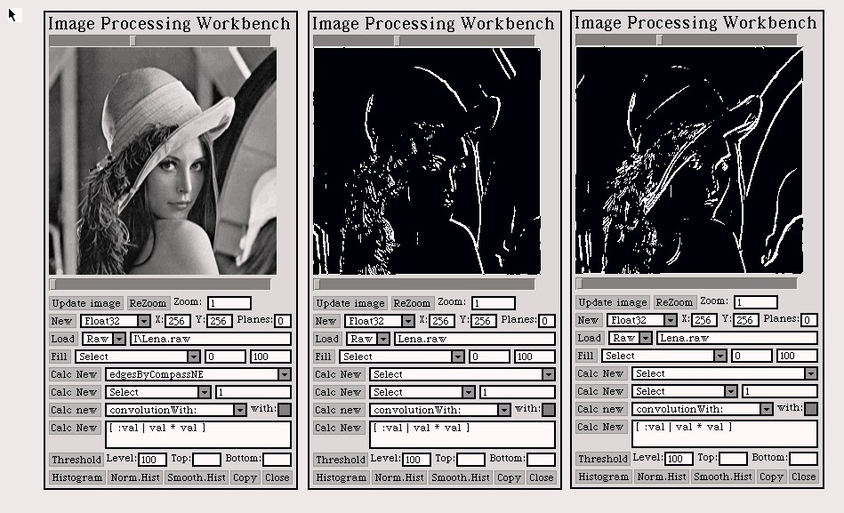
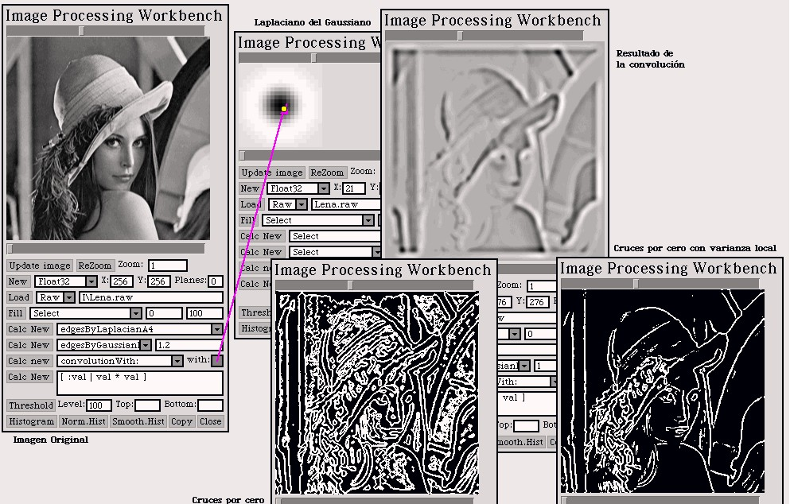

PhotoSqueak
1.0
PhotoSqueak
1.0
by Juan Manuel Vuletich
Back to Juan's studio


Part 4
Exercise 1 - Border Detection by the
first Derivative
Introduction
It was asked to implement border detection by the first
derivative. This is done by convolution with a filter that aproximates
the first derivative, and then considering a border those pixels whose
value is greater than some threshold.
Development
Several filters were used. It can be seen in the example
that some filters help find borders in different orientations. Local variance
was later considered, asking for a pixel to be in a high local variance
neighbourhood (besides being greater than the threshold) to be considered
a border. In this case, this does not make a big difference.

Exercise 2 - Border Detection by the
second Derivative
Introduction
This is done by covolving with a filter that aproximates
the second derivatice, and considering borders those pixel that represent
a zero crossing.
Development
I used the following Laplacian filters as second derivative
approximations:
a) 0 1 0 b) 1 1
1 c) -1 2 -1
1 -4 1
1 -8 1 2 -4
2
0 1 0
1 1 1 -1 2
-1
As neighbourhood criteria (which neighbours to consider,
to be a zero crossing) o implemented 4 neighbours, (up, down, left and
right) and 8 neighbours (including the corners).
The result is not satisfactory. Too much spurious
borders are detected. The results are good if the Local variance is also
considered.
Exercise 3 - Border Detection by the
Gaussian Laplacian
Introduction
The Gaussian Laplacian is used as the aproximation to
the second derivative.
Development
The example shows at the top left the original image.
At the top right, there is the result of the convolution. At the bottom
center ther is the image of zero crossing points. Too much spurious borders
are detected (anyway, doesn't it look good?). At the bottom right, the
local variance is also considered, and the results are the best of this
work.

Exercise 4 - Noise sensibility
Introduction
All the implemented methods are tried on noisy images,
and the results compared.
Results
Note: When processing images with additive gaussian
noise with any method that includes local variance, it is necessary to
adjust the local variance threshold to be not less than the variance of
the noise. If not, the result is useless.
In the studied cases, the Gaussian Laplacian gives
better results than the Second Derivative.
On noiseless images, the Gaussian Laplacian gives
the best results. But on noisy images, the First Derivative is less affected.
This means, the results could (in some cases) be better.